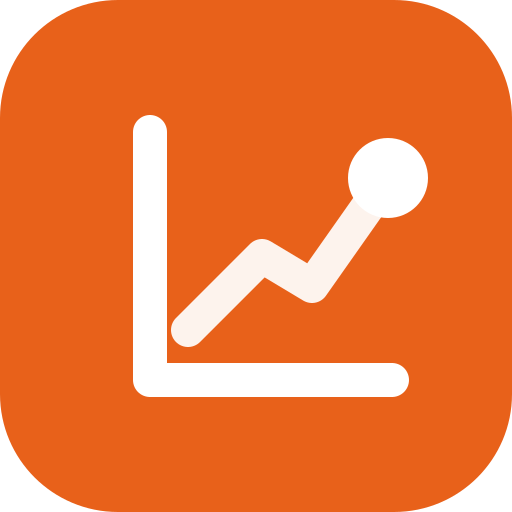
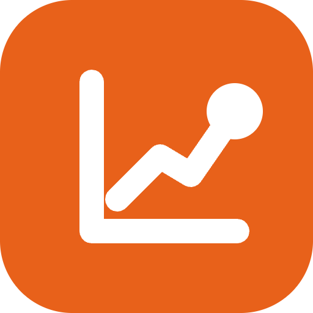

The Insight Point — 축 위로 상승하는 데이터 궤적이 하나의 초점으로 수렴. 주황 배경(반경 23%) + 흰색 스트로크는 다크/라이트 공통으로 동일하게 사용합니다. 벡터라 무한 확대 가능.

512px · PWA작은 크기(16·32px)에서도 축·궤적·초점이 읽히도록 favicon.svg는 로고마크보다 스트로크를 살짝 굵게(40 vs 34) 조정한 별도 버전입니다. favicon.svg를 우선 사용하고, 구형 브라우저용으로 favicon.ico(16/32/48 내장)를 함께 둡니다.
워드마크 SVG는 IBM Plex Sans 700(in·sight) + 600(Analytics) 텍스트로 구성됩니다. 폰트가 없는 환경(인쇄·외부 임베드)에서는 텍스트를 아웃라인(path)으로 변환해 사용하세요.
| 파일 | 용도 |
|---|---|
| favicon.svg | 기본 파비콘 (벡터, 모던 브라우저 우선) |
| favicon.ico | 레거시 파비콘 — 16·32·48px 내장 |
| favicon-16/32/48.png | 개별 비트맵 파비콘 |
| apple-touch-icon.png | iOS 홈 화면 아이콘 (180px) |
| favicon-192/512.png | PWA / Android manifest 아이콘 |
| logomark.svg | 앱 레일·헤더·범용 마크 |
| wordmark.svg | 텍스트 워드마크 (단독) |
| lockup-horizontal.svg | 마크 + 워드마크 가로 조합 |
<!-- 모던 브라우저: SVG 우선, ico 폴백 --> <link rel="icon" type="image/svg+xml" href="/brand/favicon.svg"> <link rel="icon" type="image/x-icon" href="/brand/favicon.ico" sizes="any"> <link rel="icon" type="image/png" sizes="32x32" href="/brand/favicon-32.png"> <link rel="apple-touch-icon" href="/brand/apple-touch-icon.png">
/* PWA manifest.json — icons */ "icons": [ { "src": "/brand/favicon-192.png", "sizes": "192x192", "type": "image/png" }, { "src": "/brand/favicon-512.png", "sizes": "512x512", "type": "image/png" } ]